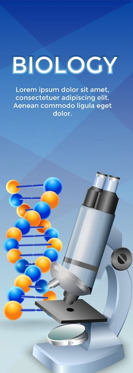

For Further Reading
Links to Resources
Home
Biology
Chemistry
Physics
Further Reading

Biology:
Carl Linnaeus:
Wikipedia
Berkeley
Britannica
Charles Darwin:
Wikipedia
Britannica
biography.com
Genetic Engineering:
Plant Stress Tolerance
Human Pluripotent Cells
PRIDE Database
Chemistry:
Jabir ibn Hayyan:
Wikipedia
Britannica
New World Encylcopedia
Dmitri Mendeleev
Wikipedia
Britannica
Famous Scientists
Carbon Nanotubes:
Physical Properties
Application
Single-Shell Carbon Nanotubes
Physics:
Aristotle:
Wikipedia
Britannica
HISTORY
Isaac Newton:
Wikipedia
HISTORY
BBC
CERN Research:
ATLAS Experiment
W and Z Masses
Accelerator Complex
 For Further Reading
For Further Reading